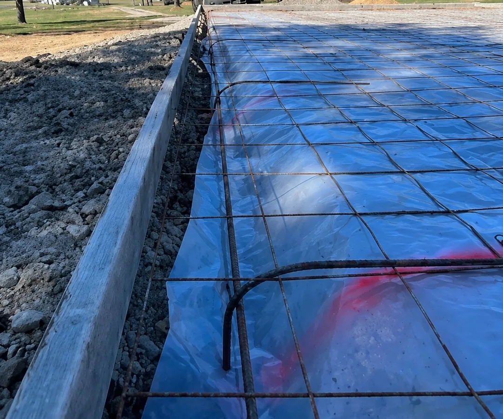
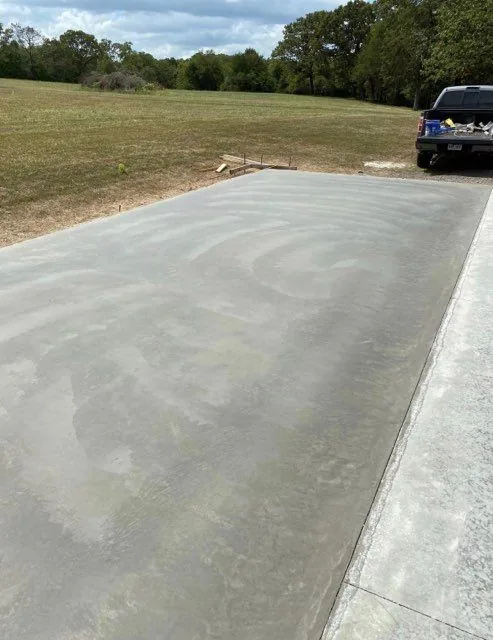
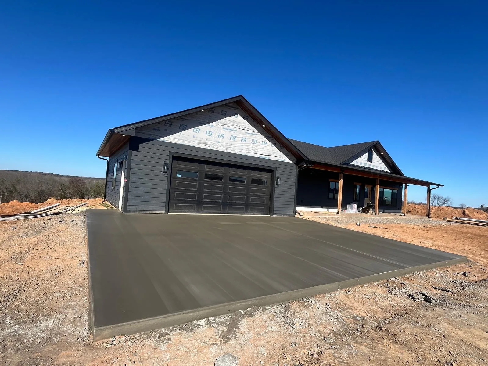

What goes into a driveway
A concrete driveway is only as good as what's underneath it. The slab you see is the last step of a process that mostly happens below grade, and skipping any part of it shows up a few winters later as heaving, sinking and random cracks. Here's how Logan builds one.


Layout and grading
We start by laying out the driveway, approach and any turnaround or parking pad, then setting the grade so water runs away from the house and off the slab instead of pooling against the garage. On a sloped lot that might mean a slight crown or cross-pitch; on a flat lot it means making sure there's somewhere for the water to go.
Base preparation
Topsoil and soft material come out. A compacted gravel base goes in and gets packed down tight with a plate compactor. This is the single biggest difference between a driveway that stays flat for decades and one that starts settling in year two. It's also the part that's invisible once the concrete is down, which is why some contractors skip it. We don't.
Forms, reinforcement and thickness
Forms are set to the finished height and checked for straight lines and proper pitch. A standard residential driveway is poured at four inches thick and reinforced with steel. If you park a heavy truck, trailer, boat or RV, tell Logan on the estimate and that section gets poured thicker with heavier reinforcement — it's cheap to do before the pour and impossible to do after.
The pour and finish
Concrete is placed, screeded, floated and finished with a broom texture. The broom finish is the standard for driveways for a reason: it gives tires and shoes traction when the slab is wet or icy, it hides minor imperfections, and it looks clean. If you want a border, a stamped band or integral color to tie the driveway to the house, see the stamped and decorative page — it works on driveways too.
Control joints
Concrete shrinks slightly as it cures, and it will crack somewhere. Control joints are straight, planned grooves that give those cracks a place to happen out of sight. We cut them to the right depth, on the right spacing for the slab, in a pattern that looks intentional. Random cracking across a driveway almost always traces back to joints that were too shallow, too far apart or skipped entirely.
Curing and clean-up
Once the finish is on, the slab needs time. Forms come off, the edges get cleaned up, and the site is put back the way we found it — gravel raked, mud cleaned off the street, nothing left in the yard. You'll get plain instructions on when to walk on it and when to park on it.
Approaches: where the driveway meets the street
The approach is the section between the public street or county road and your driveway proper. It's the part that takes the sharpest turning loads and, in many cities, the part that has rules about width, thickness and slope. Logan will check what applies to your address and pour the approach to spec so it matches the rest of the drive and doesn't become a problem later. Approaches are also a common stand-alone job when an older gravel or asphalt driveway needs a proper concrete entrance.
Driveway extensions, turnarounds and parking pads
Not every driveway job is a full new driveway. Some of the most useful projects are small ones:
- Widening a single-car drive so two vehicles fit without one sitting in the grass.
- Turnarounds so you're not backing out onto a busy road.
- Parking pads for a camper, boat trailer or a third vehicle.
- Walkway tie-ins from the driveway to the front door — see sidewalks and walkways.
With an extension we match the height and pitch of your existing slab and tie the new section in correctly so it doesn't become a trip edge or a water trap.
Timeline for a driveway
Most residential driveways are a two-to-three-day job: a day for excavation, base and forms, a day for the pour, and a visit back to cut joints and pull forms. Logan can usually get a job started within about a week of the estimate, weather allowing. Concrete doesn't like being poured in the rain or below freezing, so a wet week can move the date — you'll always hear about it before, not after.
Who this is for
Homeowners building new, replacing a driveway that's past saving, or finally putting concrete where there's been gravel. Also builders and contractors in Northwest Arkansas who need reliable residential flatwork from a concrete sub who shows up and finishes clean. We work across Gentry, Siloam Springs, Bentonville, Centerton, Rogers, Springdale and Fayetteville.

Questions about driveways & approaches
How thick should a residential concrete driveway be?
Four inches is the standard for cars and pickups. If you park a heavy truck, trailer or RV on it, we'll recommend going thicker in that section and reinforcing accordingly.
How long before I can drive on a new driveway?
Plan on staying off it with vehicles for about seven days. You can walk on it after a day or two. Concrete keeps gaining strength for weeks, so the longer you wait the better it treats you.
Will my driveway crack?
All concrete wants to crack as it cures and moves with the ground. The job of good prep and properly spaced control joints is to make that cracking happen inside the joints where you'll never see it. That's exactly why we're particular about prep.
Can you extend or widen my existing driveway?
Yes — extensions, turnarounds and parking pads are common jobs. We'll match the height and pitch of the existing slab and tie the new section in correctly.
Do you replace old driveways?
We don't do repairs or patching, but a full tear-out and new pour is a new-construction job, and that's what we do. Ask about it on the call.
Ready to talk it through? Request a free estimate or call (479) 212-3971. Logan answers the phone himself.